01
disk: CD is the abbreviation for Compact Disk.
(đĩa) n

02
facilitate: The new train station will facilitate the development of tourism.
(làm cho thuận tiện) v
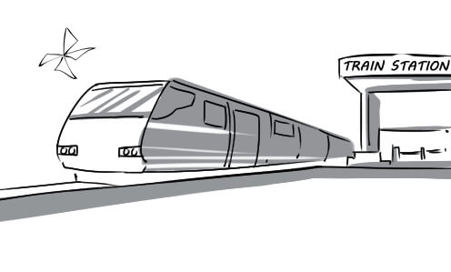
03
network: This social network allows users to share information with each other very easily.
(mạng lưới) n

04
popularity: The popularity of online gaming has been rising in recent years.
(tính phổ biến) n
05
process: It takes hours for the computer to process these files.
(xử lý) v

06
replace: Nowadays, the abacus is replaced by the pocket calculator.
(thay thế) v
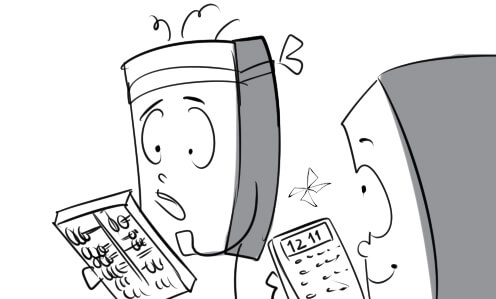
07
revolution: There has been a great revolution in communications.
(cuộc cách mạng) n
08
sharp: Nolan showed how sharp he was when he fixed the broken laptop in just 5 minutes.
(nhạy bén, thông minh) a

09
skill: You have to master basic computer skills if you want to use this modern laptop.
(kỹ năng) n

10
software: This English learning software is very useful for children.
(phần mềm) n
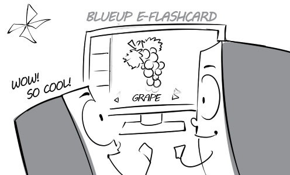
11
store: All files are stored in folders according to their type.
(lưu trữ) v

12
technical: We offer free technical support for those buying our computers.
(thuộc về kỹ thuật) a

13
assemble: The reporter assembled information for his article from many sources.
(tập hợp) v
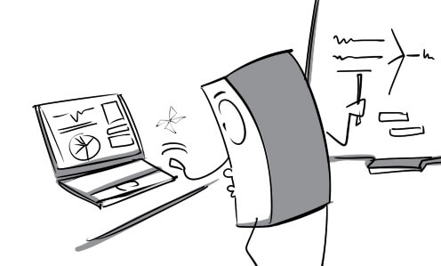
14
beforehand: To make it more convenient, we should stamp the envelopes beforehand.
(trước, từ trước) adv

15
complication: It's difficult for us to study Arabic because its script exhibit complications that are not found in the n script.
(sự phức tạp) n

16
courier: I had the important letter delivered to the director by a courier.
(người đưa thư, chuyển phát) n

17
express: DHL is one of the most popular express delivery services in the world.
(tốc hành) a

18
fold: Jack folded his love letter very carefully and put it into an envelope.
(gấp, gập) v

19
layout: The director is very pleased with the layout of the new office.
(cách bố trí) n

20
mention: Lisa mentioned his debt of $2,000 in the letter.
(đề cập) v

21
petition: The workers are starting a petition for a salary increase.
(sự kiến nghị) n
22
proof: Peter proofed the important letter very carefully.
(tìm lỗi) n

23
register: All the guests have to register at the front desk.
(đăng ký) v

24
revise: You need to revise this letter because it is not formal enough.
(sửa lại) v
25
abundant: The recruiter was surprised by the abundant number of candidates.
(rất nhiều) a

26
accomplish: Surprisingly, the candidate accomplished the 30-minute test in only less than ten minutes.
(hoàn thành) v

27
bring together: The HR manager brings together the candidates for the interview.
(tập hợp lại) v

28
candidate: Andy overcame many candidates to secure this position.
(ứng viên) n

29
come up with: The director came up with sales plans for the next year.
(nghĩ ra) v

30
commensurate: Salary will be commensurate with the applicant's qualifications.
(tương xứng với) a

31
match: With his electronics engineering diploma, David is a perfect match for this job.
(sự tương xứng, thích hợp) n

32
profile: Tuan was not accepted because he did not fit the job profile.
(mô tả sơ lược) n

33
qualification: All of his qualifications meet the requirements of this position.
(phẩm chất, tư cách, khả năng) n

34
recruit: My company needs to recruit two janitors right now.
(tuyển dụng) v

35
submit: I went to the HR department to submit my job application.
(nộp) v
36
time-consuming: Recruitment is such a time-consuming process which includes many stages.
(tốn nhiều thời gian) a

37
ability: With his exceptional ability, Peter won all the competitions that he took part in.
(khả năng) n

38
apply: The boss' son applies for the job by himself because he doesn't want to depend on his father.
(xin việc) v
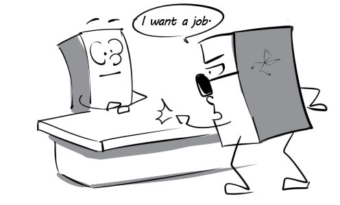
39
background: His background in teaching is an advantage for this job.
(kiến thức, kinh nghiệm) n

40
call in: The human resource manager called in the next applicant for direct interviews.
(gọi vào) v

41
confidence: The interviewer is easily attracted by applicant's confidence.
(sự tự tin) n

42
constantly: Michael is constantly applying for multiple jobs in different companies.
(liên tục) adv
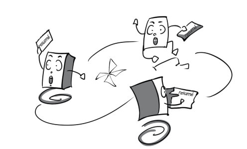
43
expert: This chef is an expert in Chinese cuisine.
(chuyên gia) n
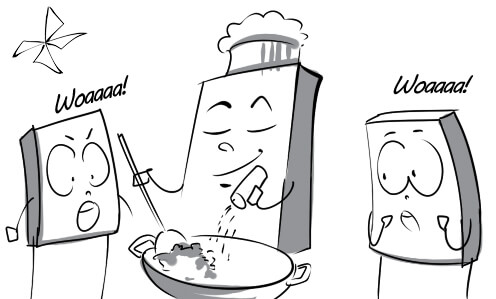
44
hesitant: Tommy was hesitant to answer when he was asked about his salary expectations.
(lưỡng lự) a

45
present: The candidate is presenting his ideas to the recruiters.
(trình bày) v

46
weakness: The new secretary's biggest weakness is her appearance.
(điểm yếu) n
47
conduct: My company is conducting a survey on the customers.
(tiến hành) v

48
generate: The new factory generated a lot of job opportunities.
(tạo ra) v
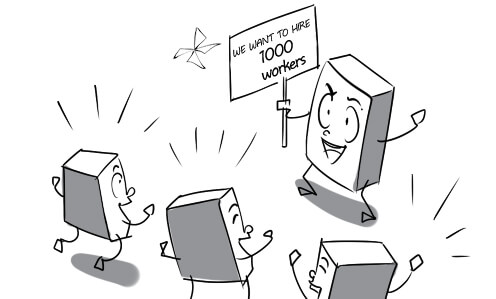
49
hire: I hired a landscape gardener to take care of my garden.
(thuê) v

50
mentor: The mentor is teaching the interns how to do their job.
(người cố vấn) n
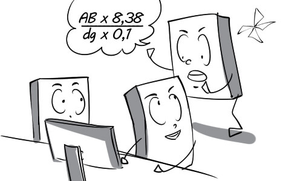
51
reject: Trung applied for a job as a translator, but he was rejected.
(từ chối) v

52
success: Daniel had much success in convincing the recruiter to hire him.
(sự thành công) n
53
training: Many training courses are conducted to improve employees' skills.
(tập huấn) n

54
update: The manager updated us on the new working time.
(cập nhật) v

55
basis: On the basis of my education and experience, I believe that I am perfect for this job.
(nền tảng) n
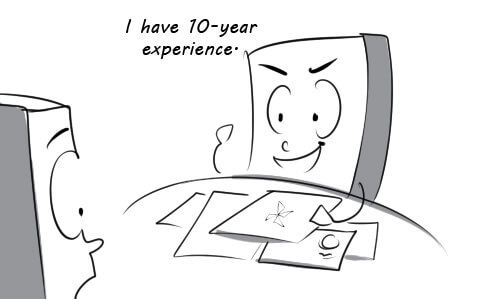
56
benefit: The new salary policy will be of benefit to all the employees.
(lợi ích) n

57
compensate: The worker was compensated for his work injury.
(bù đắp) v
58
delicately: Leo is asking his boss for a raise very delicately.
(một cách khéo léo) v

59
eligible: In Vietnam, you are eligible to vote when you are 18 years old.
(đủ tư cách) a

60
flexible: David is very flexible in his work. He can undertake various jobs.
(linh động) a

61
negotiate: Thomas is negotiating with the recruiter about his salary.
(thương lượng) v

62
raise: Peter was very happy when he was given a pay raise.
(sư tăng lương) n

63
retire: Mr Robert leads a leisurely life in Hawaii after retiring.
(nghỉ hưu) v

64
vest: The vice-director was vested to choose a new secretary.
(trao quyền cho) v

65
wage: Andrew receives his salary on the 22nd of the month.
(tiền lương) n

66
achievement: Everyone was proud of Lisa's achievements.
(thành tựu) n

67
contribute: The boss was very content with the work they contributed to the project.
(đóng góp) v

68
dedication: The professor always shows great dedication to his career.
(sự cống hiến) n

69
loyal: Jack has been very loyal to his boss through thick and thin.
(trung thành) a

70
merit: The employee is awarded because of his merit.
(sự xuất sắc) n
71
obvious: Her acne was so obvious that everyone could see it.
(rõ ràng) a

72
productive: The workers had a very productive day at work.
(có năng suất) a
73
promote: Mr Thomas was promoted to general manager after a long time of working for this company.
(thăng chức) v

74
recognition: The manager presents a small amount of money to Peter in recognition of his contribution.
(sự công nhận) n

75
value: The expert valued the masterpiece at $10,000,000.
(định giá) v

76
bargain: Mary is bargaining with the salesman to get the best deal.
(mặc cả) v

77
bear: Leila cannot bear to queue under the sun to buy discounted clothes.
(chịu đựng) v

78
behavior: He is always on his best behavior when communicating with his clients.
(cách cư xử) n
79
checkout: Customers will pay for their merchandise at the checkout.
(quầy thanh toán) n

80
comfort: My wife always comforts me when I am sad.
(an ủi) v

81
expand: We've expanded the business by opening more stores in many cities.
(mở rộng) v
82
explore: The little boy usually explores the toy section while his mother goes shopping.
(khám phá) v
83
item: This teddy bear is the top selling item in the toy shop.
(món hàng) n

84
mandatory: The shop has a mandatory policy of allowing customers to try on only 3 items at a time.
(bắt buộc) a
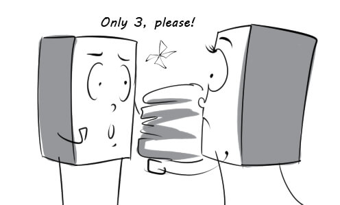
85
merchandise: The shop's wide selection of merchandise makes consumers very confused.
(hàng hóa) n

86
strict: This shop has a very strict return policy.
(nghiêm ngặt) a

87
trend: Lady Gaga's high heels became the latest fashion trend.
(xu hướng) n

88
diversify: Bluemilk diversified its products to attract more customers.
(đa dạng hóa) v

89
enterprise: My brother has been working as an intern in this enterprise for 3 months.
(công ty) n
90
essential: Human being cannot grow strong and healthy without essential factors such as water, food, vitamins…
(thiết yếu) a

91
function: The train station still functions normally despite the power cuts.
(hoạt động) v

92
maintain: Our company still maintains relations with big customers although we don't work with them anymore.
(duy trì) v

93
obtain: We finally obtained a contract with that company after long negotiations.
(thu được) v

94
prerequisite: A Ph.D degree is an essential prerequisite for employment at this level.
(điều kiện tiên quyết) n
95
quality: Blueway's products are of very high quality.
(chất lượng) n

96
smooth: Peter coordinates closely with his colleagues to ensure the smooth running of the restaurant.
(trôi chảy, suôn sẻ) a
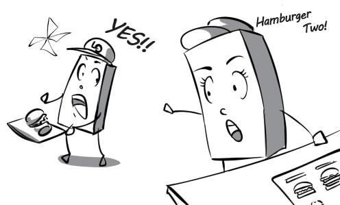
97
source: The source of this teddy bear is a small town in China.
(nguồn) n

98
stationery: I went to the stationery shop to buy some notebooks.
(văn phòng phẩm) n